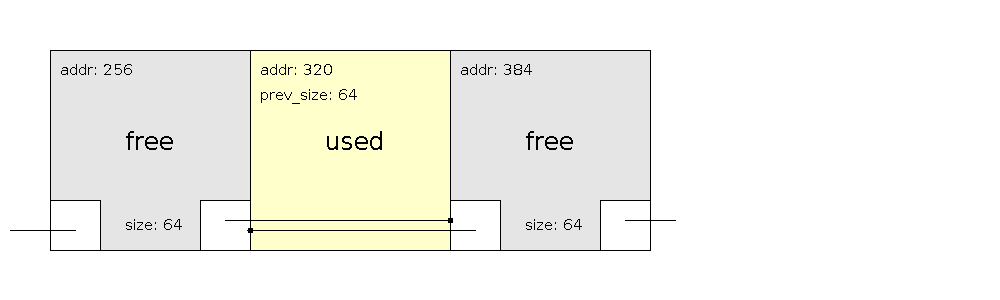
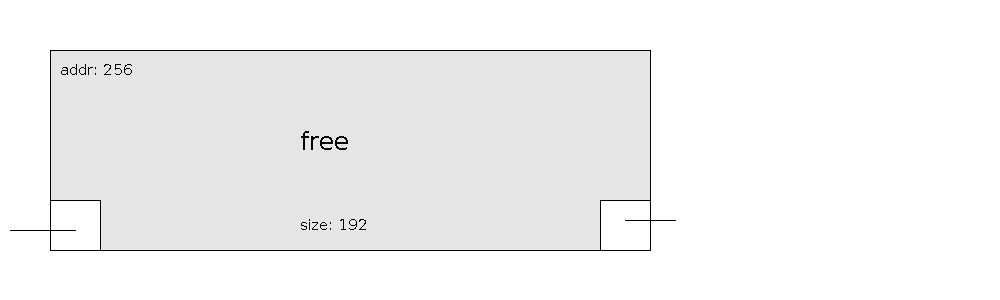
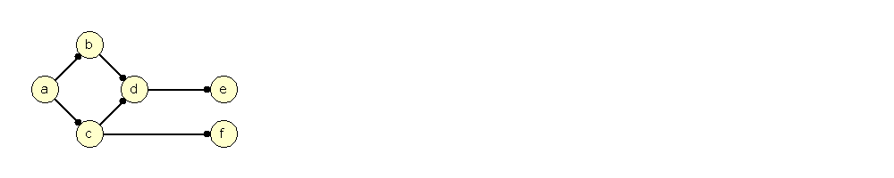
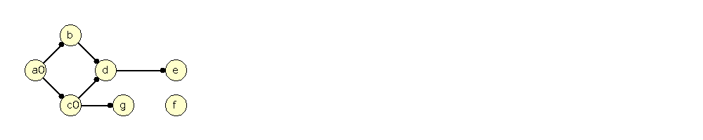
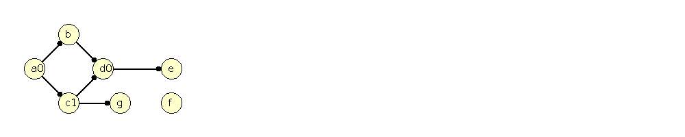
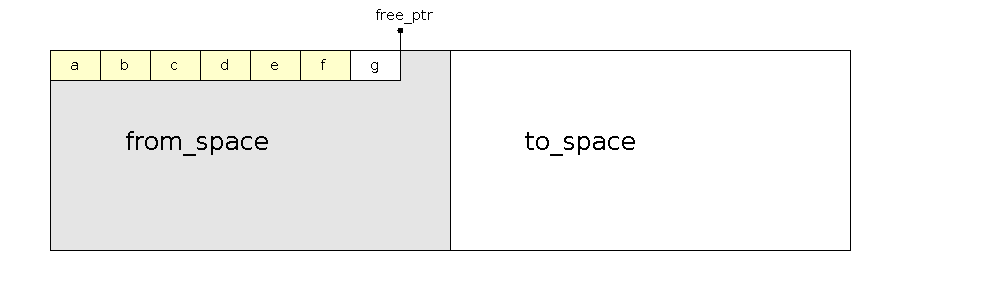
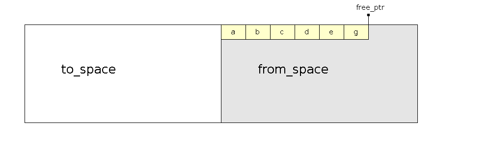
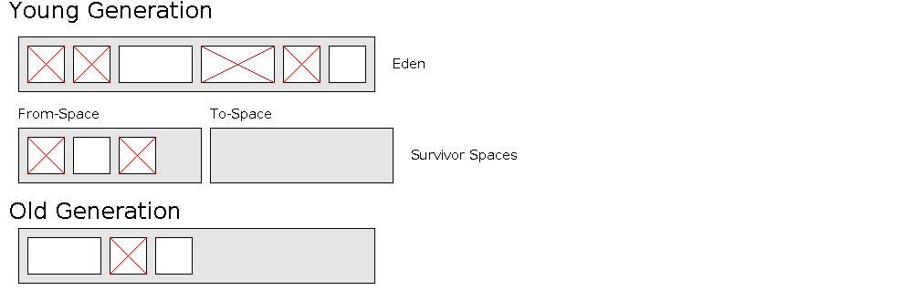

17: memory management
Sequential Fit | Buddy Allocation | Reference Counting | Garbage Collection
Sequential Fit Methods [6]
glibc malloc source code: http://code.woboq.org/userspace/glibc/malloc/malloc.c.html
1139 chunk-> +-+-+-+-+-+-+-+-+-+-+-+-+-+-+-+-+-+-+-+-+-+-+-+-+-+-+-+-+-+-+-+-+
1140 | Size of previous chunk, if allocated | |
1141 +-+-+-+-+-+-+-+-+-+-+-+-+-+-+-+-+-+-+-+-+-+-+-+-+-+-+-+-+-+-+-+-+
1142 | Size of chunk, in bytes |M|P|
1143 mem-> +-+-+-+-+-+-+-+-+-+-+-+-+-+-+-+-+-+-+-+-+-+-+-+-+-+-+-+-+-+-+-+-+
1144 | User data starts here... .
1145 . .
1146 . (malloc_usable_size() bytes) .
1147 . |
1148 nextchunk-> +-+-+-+-+-+-+-+-+-+-+-+-+-+-+-+-+-+-+-+-+-+-+-+-+-+-+-+-+-+-+-+-+
1149 | Size of chunk |
1150 +-+-+-+-+-+-+-+-+-+-+-+-+-+-+-+-+-+-+-+-+-+-+-+-+-+-+-+-+-+-+-+-+
A free list (doubly linked list) of free blocks is kept. The list is built from
the blocks that are free. A sequential scan is done along the linked list until
an appropriate sized block is found.
- Start:

- Delete at 320. Check in 320-prev_size to find a free tag. Found. Check in 320+size to find a free tag. Found. Combine all elements into one node.
Otherwise add to free list.

malloc stores book-keeping data for the pointer returned before the pointer returned [7]. It uses more space per allocation than you request.
Basic Non-Sequential Fit
A vector or tree of lists is kept according to block size.
- When memory is returned to the system it is added to a list of that size because the same size may be needed again
- Note that malloc cannot be used for these red-black tree nodes because those would need to be tracked [7]
Buddy Memory Allocation
In buddy memory allocation, no two neighboring blocks are free:
- 256k blocks can be at location: 0
- 128k blocks can be at locations: 0, 4
- 64k blocks can be at locations: 0, 2, 4, 6
- 32k blocks can be at locations: 0, 1, 2, 3, 4, 5, 6, 7
A buddy of a block can be found by flipping a bit in the address.
| 32k |
32k |
32k |
32k |
32k |
32k |
32k |
32k |
| 0 |
1 |
2 |
3 |
4 |
5 |
6 |
7 |
| 2^8 |
| 2^4 |
2^4 |
| 2^2 |
2^2 |
2^4 |
| 2^1 |
2^1 |
2^2 |
2^4 |
| 2^1 |
2^1 |
2^2 |
2^4 |
| 2^1 |
2^1 |
2^2 |
2^4 |
| 2^1 |
2^1 |
2^2 |
2^4 |
| 2^1 |
2^1 |
2^2 |
2^4 |
| 2^2 |
2^2 |
2^4 |
| 2^2 |
2^2 |
2^4 |
| 2^4 |
2^4 |
| 2^8 |
- The linux kernel uses this system with some optimizations
- A chunk of memory may be much too big for an object
- Slab Allocation is used to allocate inside of the chunks
- With slab allocation, the kernel knows the fixed size of objects. When they are destroyed they don't actually get freed, they are cached, but zero'd out
Reference Counting Garbage Collection
A smart pointer can be used in reference counting garbage collection.
- A counter tracks when pointer references are copied
- In the SmartPointer destructor, the count is decremented
- When the count becomes zero, the memory made with new is deleted
1:
2:
3:
#include
<
iostream>
4:
#include
<
string>
5:
6:
class
Person
{
7:
public
:
8:
std:
:
string
m_Name;
9:
std:
:
string
m_Email;
10:
}
;
11:
12:
class
Counter
{
13:
public
:
14:
int
m_Count;
15:
Counter(
)
:
m_Count(
1)
{
}
16:
}
;
17:
18:
template
<
typename
T>
19:
class
SmartPointer
{
20:
public
:
21:
SmartPointer(
)
:
m_Ptr(
0)
,
m_Counter(
new
Counter(
)
)
{
}
22:
SmartPointer(
T
*
ptr)
:
m_Ptr(
ptr)
,
m_Counter(
new
Counter(
)
)
{
}
23:
virtual
~SmartPointer(
)
;
24:
T
*
operator->
(
)
{
return
m_Ptr;
}
25:
void
operator=
(
SmartPointer&
rhs)
;
26:
private
:
27:
T
*
m_Ptr;
28:
Counter
*
m_Counter;
29:
}
;
30:
31:
template
<
typename
T>
32:
SmartPointer<
T>
:
:
~SmartPointer(
)
33:
{
34:
m_Counter->
m_Count--;
35:
std:
:
cout
<
<
"remaining count: "
<
<
m_Counter->
m_Count
<
<
std:
:
endl;
36:
if
(
m_Counter->
m_Count
=
=
0)
{
37:
std:
:
cout
<
<
"deleting object..."
<
<
std:
:
endl;
38:
delete
m_Ptr;
39:
delete
m_Counter;
40:
}
41:
}
42:
43:
template
<
typename
T>
44:
void
SmartPointer<
T>
:
:
operator=
(
SmartPointer&
rhs)
{
45:
rhs.m_Counter->
m_Count++;
46:
this->
m_Ptr
=
rhs.m_Ptr;
47:
this->
m_Counter
=
rhs.m_Counter;
48:
}
49:
50:
int
main(
int
argc,
char
*
argv[
]
)
{
51:
52:
Person
*
person
=
new
Person(
)
;
53:
person->
m_Name
=
"phil pratt-szeliga"
;
54:
person->
m_Email
=
"pcpratts@syr.edu"
;
55:
SmartPointer<
Person>
ptr(
person)
;
56:
57:
std:
:
cout
<
<
"name: "
<
<
ptr->
m_Name
<
<
std:
:
endl;
58:
std:
:
cout
<
<
"email: "
<
<
ptr->
m_Email
<
<
std:
:
endl;
59:
60:
SmartPointer<
Person>
ptr2;
61:
ptr2
=
ptr;
62:
63:
64:
65:
66:
67:
68:
69:
70:
return
0;
71:
}
Notes:
- In reference counting, objects are freed as soon as they can no longer be referenced.
- In tracing garbage collection (next), objects are freed sometimes much after they are not needed
- In tracing garbage collection, there can be long pauses in execution that are not predictable. In realtime or embedded systems, sometimes this is not an option
- The references can really form a graph. To handle cycles in a graph, you can delete a whole strongly connected component when none of the vertices in the component can be accessed
Mark-and-Sweep Garbage Collection
In mark-and-sweep, all objects in the system have an 'in-use' flag.
1:
algorithm
naiveMarkSweep(
root_objects,
all_objects)
2:
add
root_objects
to
a
queue;
3:
while
queue
is
not
empty
4:
element
=
pop
from
queue;
5:
element.in_use
=
true;
6:
for
all
objects
accessible
from
element
7:
add
object
to
queue;
8:
for
each
object
in
all_objects
9:
if
object.in_use
=
false
10:
reclaim
memory;
11:
else
12:
set
object.in_use
to
false;
- This garbage collector requires to entirely stop all program execution
- Also, the entire memory needs to be visited twice, this can be very slow in paged memory systems
Example of object header in memory managed language:
struct Object {
int ref_ptr_size;
bool in_use;
struct RefPointers {
long value;
} ref_pointers[1];
};
Example Graph of Objects:

A is the root object here.
Allocation of a new node and making c point to it.
| Curr Node |
Queue |
In-Use |
Not In-Use |
| a |
b c |
[a] |
[b c d e f g] |
| b |
c d |
[a b] |
[c d e f g] |
| c |
d g |
[a b c] |
[d e f g] |
| d |
g e |
[a b c d] |
[e f g] |
| g |
e |
[a b c d g] |
[e f] |
| e |
|
[a b c d g e] |
[f] |
Problems with Mark-and-Sweep
The queue in the above example needs memory. We cannot use a fixed sized array for this because an overflow cannot be ignored.
We can store extra data in each object header to allow arbitrary depth of recursion.
struct Object {
int ref_ptr_size;
bool in_use;
int curr_ptr;
long curr_parent;
struct RefPointers {
long value;
} ref_pointers[1];
};

|
curr_ptr |
curr_parent |
| a |
0 |
NULL |
| c |
0 |
a |
| g |
0 |
c |

|
curr_ptr |
curr_parent |
| a |
0 |
NULL |
| c |
1 |
a |
| d |
0 |
c |
| e |
0 |
d |
1:
algorithm
markSweepNoQueue(
root_objects)
{
2:
for
(
each
object
in
root_objects)
{
3:
Object
curr
=
object;
4:
curr.curr_ptr
=
0;
5:
curr.curr_parent
=
NULL;
6:
while
(
true)
{
7:
curr.in_use
=
true;
8:
int
i
=
curr.curr_ptr;
9:
if
(
i
==
curr.ref_ptr_size)
{
10:
curr
=
curr.curr_parent;
11:
if
(
curr
==
NULL)
{
12:
break
;
13:
}
14:
}
15:
Object
child
=
curr.ref_pointers[
i]
;
16:
curr.curr_ptr++;
17:
if
(
child.in_use)
{
18:
continue;
19:
}
20:
child.curr_ptr
=
0;
21:
child.curr_parent
=
curr;
22:
curr
=
child;
23:
}
24:
}
25:
}
26:
Tri-Color Marking Garbage Collection [5]
Tri-Color Marking has 3 sets:
- White set: Objects that can possibly be collected
- Black set: Objects that definately can't be collected
- Grey set: All objects accessible from root objects but haven't been scanned yet
Algorithm:
- Start by adding the root objects into the grey set
- Pick an object from the grey set and blacken it by putting all directly accessibly white objects in the grey set
- Repeat step one until the grey set is empty
- Reclaim the objects in the white set
| Grey |
Black |
White |
| a |
|
b c d g e f |
| b c |
a |
d g e f |
| c d |
a b |
g e f |
| d g |
a b c |
e f |
| g e |
a b c d |
f |
| e |
a b c d g |
f |
|
a b c d g e |
f |
You don't have to rescan the whole memory again with tri-color marking. The in_use variable is kept outside of the objects.
Moving vs. non moving
- Moving: all alive objects can be moved to a new, empty, memory space and compacted as moved.
- Non-moving: a free list is kept of free space
A moving strategy requires work to move the memory, but can make allocation very fast:
- To allocate, just increment a "free-pointer"
- Allocating a free pointer is very simple to implement in a concurrent environment (like my research). You simply do an atomic increment-and-get-previous
- However, the runtime needs to keep track of handles to pointers to update when the objects are moved
Allocation in a Moving Garbage Collector
A from_space and to_space is kept.

To compact, the black objects are copied to the to_space and the spaces are swapped.

Concurrent Mark-Sweep (CMS) Garbage Collection [10-11]
All of the previous garbage collection algorithms were stop-the-world algorithms. CMS is a concurrent algorithm so the application can
still run while garbage collection takes place.
There are four colors:
- White: objects that have not yet been visited while marking
- Gray: object has been visisted, but children have not
- Black: object has been visisted and children have been visisted
- Blue: object is in the free list
There are three major phases
- Root Enumeration: Determine Roots and mark them grey
- Marking Phase: While grey objects exist, mark their children grey and mark the current object black
- Sweep Phase: Convert white objects to blue and convert grey/black objects to white
During the marking phase, the mutators (programs outside of the collector) allocate objects as grey.
Generational Garbage Collection
It has been observed that objects that have been recently created are more likely to be recently freed. Generational Garbage Collection tries to capitalize on this
- Different sets are kept based on how old something is
- The younger sets are scanned more periodically than the older sets
Well known systems using Generational GC:
Java Garbage Collection in Hotspot [9]
All Hotspot garbage collectors use generations.
Types:
- Serial Collector
- Parallel Collector
- Parallel Compacting Collector
- Concurrent Mark-Sweep (CMS) Collector
Serial Collector
In all collectors there is Eden, the To-Space and From-Space and the Old Generation

Items are initially placed in Eden. When a collection happens, they are moved to the to-space. Then once in
the to-space the to-space is relabed from-space and live objects are moved back to the to-space. Once an object
has been in the young generation for a while, it is moved to the old generation.
To compact the old generation in the serial collector a mark-sweep compactor is used. The alive objects are shifted
left over dead objects.
Parallel Collector
With the parallel collector, the young generation uses threads in parallel to collect.
Parallel Compacting Collector
In the parallel compacting collector, the young generation uses the same method as the parallel collector. In the old
generation regions are considered. The density of regions with garbage in them are calculated. A place starting from
the left is not changed until the density goes above a threshold. From the previous collection most
objects on the left hand side of the old generation will be live.
Concurrent Mark-Sweep (CMS) Collector
The young generation is the same as the parallel collector and the old generation uses concurrent mark-sweep.
References
- http://en.wikipedia.org/wiki/Buddy_memory_allocation
- http://en.wikipedia.org/wiki/Slab_allocation
- http://en.wikipedia.org/wiki/Reference_counting
- http://www.lcs.syr.edu/faculty/fawcett/handouts/CSE687/code/smartPointer/smartPointer.cpp
- http://en.wikipedia.org/wiki/Garbage_collection_(computer_science)
- http://research.cs.vt.edu/AVresearch/MMtutorial/sequential.php
- http://web.eecs.utk.edu/~huangj/cs360/360/notes/Malloc1/lecture.html
- http://www.ibm.com/developerworks/java/library/j-jtp01274/index.html
- http://www.oracle.com/technetwork/java/javase/tech/memorymanagement-whitepaper-1-150020.pdf
- http://research.microsoft.com/en-us/um/people/lamport/pubs/garbage.pdf
- http://citeseerx.ist.psu.edu/viewdoc/summary?doi=10.1.1.52.9494